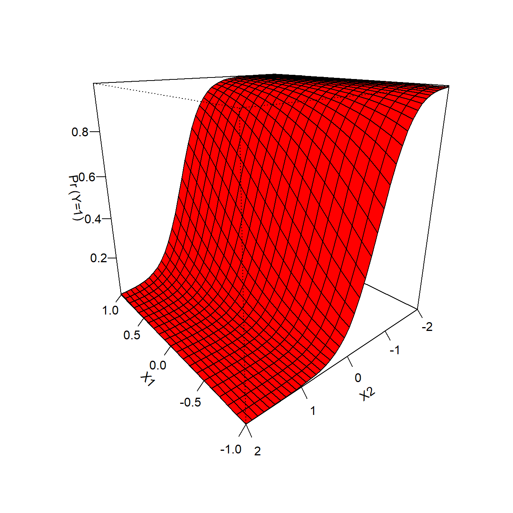
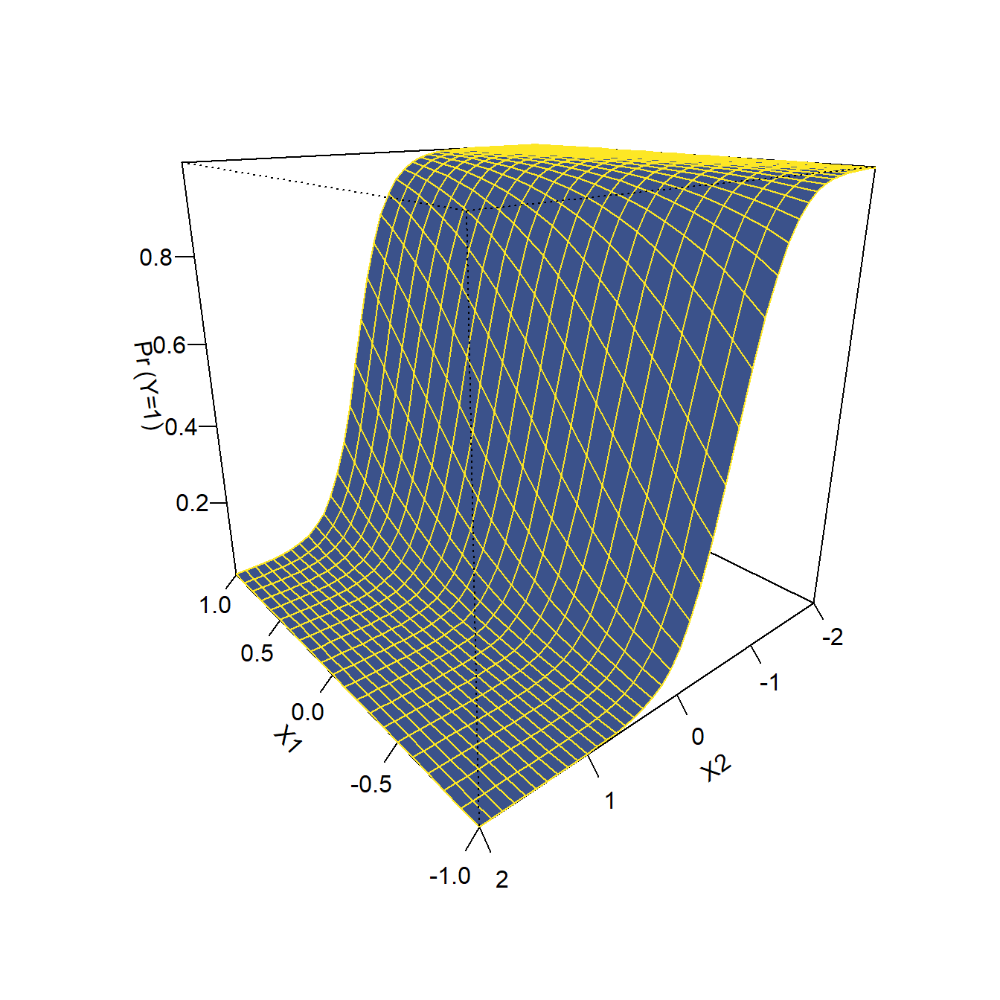

How do I get coefficents/odds ratios/and percent change to odds from a logit?
Remember that the output from summary is showing you the effect of a one unit increase in X on the logged odds of \(Y=1\). Logit coefficients can take on any value from \(-\infty\) to \(\infty\). An odds ratio of 0 means there is no effect of X on Y.
model =glm(Y ~ X1 + X2, family=binomial, data=fakedata)model
Call: glm(formula = Y ~ X1 + X2, family = binomial, data = fakedata)
Coefficients:
(Intercept) X1 X2
0.02856 1.87820 -3.63434
Degrees of Freedom: 999 Total (i.e. Null); 997 Residual
Null Deviance: 1140
Residual Deviance: 491.9 AIC: 497.9
Using the orci function will transform the logit coefficients to odds ratios. Odds ratios can take any value from \(0\) to \(\infty\). An odds ratio of 1 means that there is no effect of X on Y. A number below 1 indicates a negative effect, and a number above 1 indicates a positive effect.
Lastly, the inverse.logit, predict and pred_ci functions were all various ways of getting the predicted probability that Y=1 at some specific values of the coefficients.
How do I get the P-value for the model \(\chi^2\)?
The p-value for the model \(\chi^2\) statistic is the 3rd row of the output from logregR2.
logregR2(model)
Chi2 647.888
Df 2
Sig. <.001
Cox and Snell Index 0.477
Nagelkerke Index 0.701
McFadden's R2 0.568
If you want a more specific estimate of your p-value, you can get it by plugging a Chi2 statistic and the Degrees of freedom into this function:
Chi2 =15# a chi2 value Df =2# the degrees of freedom1-pchisq(Chi2, Df)
[1] 0.0005530844
How do I update the design data?
Any data set that ends in a capital D is a design data set. These are copies of the normal datasets (i.e. nesD is a design data version of the nes data set). If you want to change or add a new variable to design data, you need to follow a specific process:
Create one or more new variables in the regular (non-design) data set
Recreate the design data by passing the modified data to the svydesign function, making sure to specify the weights column
# creating new variables in the regular NES data setnes$dtherm_greater_than_50 = nes$ft_dem >0nes$libcpre_self_x.n =as.numeric(nes$libcpre_self_x)# re-creating nesD dataset using the updated version of NESnesD =svydesign(id =~1, data=nes, weights=~wt)
Alternatively, you can just use the update function. The first argument is a design data set. Then you would write one or more new variable names followed by an expression that indicates how you want each variable to be calculated. So this is equivalent to the prior chunk of code:
Why is the predict function giving me an error like “arguments imply differing number of rows…” or “‘newdata’ had X rows but variables found have X rows”?
I’ve seen a couple of students with this error message on question 5. This comes from using the $ annotation in your regression model. If you run:
model =glm(states$obama_win12 =="Yes"~ states$college, family=binomial)summary(model)
Call:
glm(formula = states$obama_win12 == "Yes" ~ states$college, family = binomial)
Coefficients:
Estimate Std. Error z value Pr(>|z|)
(Intercept) -10.3392 3.0958 -3.340 0.000839 ***
states$college 0.4088 0.1223 3.342 0.000833 ***
---
Signif. codes: 0 '***' 0.001 '**' 0.01 '*' 0.05 '.' 0.1 ' ' 1
(Dispersion parameter for binomial family taken to be 1)
Null deviance: 69.235 on 49 degrees of freedom
Residual deviance: 48.323 on 48 degrees of freedom
AIC: 52.323
Number of Fisher Scoring iterations: 5
The model coefficient is called states$college. When you run predict with new data, R tries to match the column names in your data set with the coefficients you named in your model, but since the coefficient is called states$college, it just ignores your new data and gives you everything with a warning like this one below:
# prediction when college = 20predict(model, newdata=data.frame(college =20))
Warning: 'newdata' had 1 row but variables found have 50 rows
The fix for this is to use the data argument when running your regression model, instead of using the $ annotation:
model =glm(obama_win12 =="Yes"~ college, family=binomial, data=states)# prediction when college = 20 predict(model, newdata=data.frame(college =20), type='response')
1
0.1031647
(and if you’re using svyglm you’d want to swap the data argument for the design argument)
model =svyglm(obama_win12 =="Yes"~ college, family=binomial, design=statesD)predict(model, newdata=data.frame(college =20), type='response')
response SE
1 0.10316 0.0699
How do I calculcate the switchover point?
The “switch over point” is the point where the predicted probability of Y=1 hits .5. Take this regression result:
(1)
(Intercept)
0.054
(0.124)
X1
0.751 ***
(0.082)
nobs
1000
*** p < 0.001; ** p < 0.01; * p < 0.05.
Predicted probabilities from the model. The red line is the switchover point
I want to find the value of X1 where the predicted probability is .5. This would be complicated if we were working with the probabilities because the effect of X on the probability of Y is nonlinear. But the effect of X on the logged odds of Y is linear. A probability of .5 corresponds to:
odds = \(.5/(1-.5) = 1\)
logged odds = \(ln[.5 / (1-.5)] = 0\)
So we can just find the value of X that gets us a logged odds of 0:
So, we just need to divide negative 1 times the intercept term by the coefficient to get the switchover point.
(-1*-0.123)/0.849
[1] 0.1448763
Plugging this value in to the logit line formula and calculating the predicted probability:
inverse.logit(-0.1229+0.8493*0.1448763)
[1] 0.5000359
Predicted probabilities from the model. The red line is the switchover point
Note: the basic logic doesn’t actually change much once you add an additional variable, as long as you account for it in the formula. For instance, if I want to find the switchover point with respect to X1 when X2 is equal to 1.7:
The persp function wants a an ordered set of numeric X values, an ordered set of numeric Y values, and then a set of Z values that correspond to the outcome at each level of X and Y. There are a number of ways to do this, but here are a couple:
with predict
# run the modelmodel =glm(Y ~ X1 + X2 , family=binomial, data=fakedata)# sensible hypothetical values for me, but maybe not for you! x1_values =seq(-1, 1, by=.1)x2_values =seq(-2, 2, by =.1)# make the new data mynewdata =expand.grid(X1 =x1_values , X2 = x2_values)# get the predictions preds =predict(model, newdata=mynewdata, type='response')persp(x = x1_values, y = x2_values,z=matrix(preds, nrow=length(x1_values), ncol=length(x2_values)),ticktype="detailed",theta=-130, # theta controls the horizontal rotationphi=20, # phi controls the vertical rotationcol="red", border="black",xlab="X1", ylab="X2",zlab="Pr (Y=1)")

pred_ci with xtabs
# using the custom predictions function: source("https://raw.githubusercontent.com/Neilblund/APAN/main/pred_ci.R")# run the modelmodel =glm(Y ~ X1 + X2 , family=binomial, data=fakedata)# make the new data mynewdata =expand.grid(X1 =seq(-1, 1, by=.1), # sensible hypothetical values for me, but maybe not for you! X2 =seq(-2, 2, by =.1))# get the predictions preds =pred_ci(model, newdata=mynewdata)# prediction ~ variable1 + variable2, data=predictiondata)z =xtabs(fit ~ X1 + X2, data=preds) persp(x =as.numeric(rownames(z)), y =as.numeric(colnames(z)),z= z,ticktype="detailed",theta=-130, # theta controls the horizontal rotationphi=20, # phi controls the vertical rotationcol="gold", border="purple",xlab="X1", ylab="X2",zlab="Pr (Y=1)")
with inverse.logit
# run the modelmodel =glm(Y ~ X1 + X2 , family=binomial, data=fakedata)x1_values =seq(-1, 1, by=.1)x2_values =seq(-2, 2, by =.1)# make the new data mynewdata =expand.grid(X1 =x1_values , # sensible hypothetical values for me, but maybe not for you! X2 = x2_values)# plugging in the coefficient values from the model: z =inverse.logit(0.05507+2.13854* mynewdata$X1 +-4.55033* mynewdata$X2)persp(x = x1_values, y = x2_values,z=matrix(z, nrow=length(x1_values), ncol=length(x2_values)),ticktype="detailed",theta=-130, # theta controls the horizontal rotationphi=20, # phi controls the vertical rotationcol="#3b528b", border="#fde725",xlab="X1", ylab="X2",zlab="Pr (Y=1)")

Don’t forget to set sensible values when you create your new data for the predictions! What values are “sensible” depends on the variable. Also, don’t forget to use phi and theta to adjust the viewing angle for the plot.
error in glm fit … something about not being meaningful for factors
Check to make sure you’re using family=binomial in your model. By default, the glm function will try to use a Gaussian link, which is basically the same thing as our normal linear regression model. So if you run something like this:
glm(obama_win08 ~ union10, data= states)
Warning in Ops.factor(y, mu): '-' not meaningful for factors
Warning in Ops.factor(eta, offset): '-' not meaningful for factors
Warning in Ops.factor(y, mu): '-' not meaningful for factors
Call: glm(formula = obama_win08 ~ union10, family = binomial, data = states)
Coefficients:
(Intercept) union10
-2.4639 0.2544
Degrees of Freedom: 49 Total (i.e. Null); 48 Residual
Null Deviance: 68.59
Residual Deviance: 52.01 AIC: 56.01
One additional caution: pay close attention to the way that factor variables are coded. When converting factors to dichotomous variables for a logit model, it will assume that the 2nd category is the “success”. If you want to change this, you can either create a new variable, or you can add a logical statement to the model itself:
# this would treat McCain winning as the 1 category. glm(obama_win08 =="McCain win"~ union10, data= states, family=binomial)
Call: glm(formula = obama_win08 == "McCain win" ~ union10, family = binomial,
data = states)
Coefficients:
(Intercept) union10
2.4639 -0.2544
Degrees of Freedom: 49 Total (i.e. Null); 48 Residual
Null Deviance: 68.59
Residual Deviance: 52.01 AIC: 56.01
The statistical meaning of this result is the same, but now we’re getting the effect on the probability of McCain winning instead of the probability of an Obama win.
Source Code
---title: "FAQs"format: html: code-fold: false code-tools: true code-summary: "Show the code" toc: true toc-depth: 3 toc-location: lefteditor: visualcode-annotations: select---```{r, include=FALSE}knitr::opts_chunk$set(warning =TRUE, message =FALSE) library(ggeffects)library(poliscidata)library(tidyverse)set.seed(100)N =1000fakedata=tibble(X1 =rnorm(N)+1.5,X2 =rnorm(N),Ystar = X1 *2+ X2 *-4 ,Y =rbinom(N, 1, inverse.logit(Ystar)) )```# How do I get coefficents/odds ratios/and percent change to odds from a logit?Remember that the output from `summary` is showing you the effect of a one unit increase in X on the logged odds of $Y=1$. Logit coefficients can take on any value from $-\infty$ to $\infty$. An odds ratio of 0 means there is no effect of X on Y.```{r}model =glm(Y ~ X1 + X2, family=binomial, data=fakedata)model```Using the `orci` function will transform the logit coefficients to odds ratios. Odds ratios can take any value from $0$ to $\infty$. An odds ratio of 1 means that there is no effect of X on Y. A number below 1 indicates a negative effect, and a number above 1 indicates a positive effect.```{r}orci(model)```You can convert the odds ratios to a percent change in the odds of Y by running:```{r}(orci(model) -1 ) *100```Lastly, the `inverse.logit`, `predict` and `pred_ci` functions were all various ways of getting the predicted probability that Y=1 at some specific values of the coefficients.# How do I get the P-value for the model $\chi^2$?The p-value for the model $\chi^2$ statistic is the 3rd row of the output from `logregR2`.```{r}logregR2(model)```If you want a more specific estimate of your p-value, you can get it by plugging a Chi2 statistic and the Degrees of freedom into this function:```{r}Chi2 =15# a chi2 value Df =2# the degrees of freedom1-pchisq(Chi2, Df)```# How do I update the design data?Any data set that ends in a capital D is a design data set. These are copies of the normal datasets (i.e. nesD is a design data version of the nes data set). If you want to change or add a new variable to design data, you need to follow a specific process:1. Create one or more new variables in the regular (non-design) data set2. Recreate the design data by passing the modified data to the `svydesign` function, making sure to specify the weights column```{r}# creating new variables in the regular NES data setnes$dtherm_greater_than_50 = nes$ft_dem >0nes$libcpre_self_x.n =as.numeric(nes$libcpre_self_x)# re-creating nesD dataset using the updated version of NESnesD =svydesign(id =~1, data=nes, weights=~wt)```Alternatively, you can just use the `update` function. The first argument is a design data set. Then you would write one or more new variable names followed by an expression that indicates how you want each variable to be calculated. So this is equivalent to the prior chunk of code:```{r}# design_data = update(design_data, new_variable_name = some_expression ... )nesD =update(nesD, dtherm_greater_than_50 = ft_dem >50, libcpre_self_x.n =as.numeric(libcpre_self_x))```# Why is the predict function giving me an error like "arguments imply differing number of rows..." or "'newdata' had X rows but variables found have X rows"?I've seen a couple of students with this error message on question 5. This comes from using the `$` annotation in your regression model. If you run:```{r}model =glm(states$obama_win12 =="Yes"~ states$college, family=binomial)summary(model)```The model coefficient is called `states$college`. When you run `predict` with new data, R tries to match the column names in your data set with the coefficients you named in your model, but since the coefficient is called `states$college`, it just ignores your new data and gives you everything with a warning like this one below:```{r, eval=FALSE}# prediction when college = 20predict(model, newdata=data.frame(college =20))``````{r, echo=FALSE}preds =predict(model, newdata=data.frame(college =20))```The fix for this is to use the `data` argument when running your regression model, instead of using the `$` annotation:```{r}model =glm(obama_win12 =="Yes"~ college, family=binomial, data=states)# prediction when college = 20 predict(model, newdata=data.frame(college =20), type='response')```(and if you're using `svyglm` you'd want to swap the `data` argument for the `design` argument)```{r}model =svyglm(obama_win12 =="Yes"~ college, family=binomial, design=statesD)predict(model, newdata=data.frame(college =20), type='response')```# How do I calculcate the switchover point?The "switch over point" is the point where the predicted probability of Y=1 hits .5. Take this regression result:```{r, echo=FALSE}model =glm(Y ~ X1 , family=binomial, data=fakedata)``````{r, echo=FALSE, warn=FALSE}huxtable::huxreg(model, statistics="nobs")``````{r, echo=FALSE}#| label: prediction for Y#| fig-cap: "Predicted probabilities from the model. The red line is the switchover point"#| column: marginlibrary(ggeffects)predict_response(model, terms=~X1) |>plot(show_ci=FALSE) +geom_hline(yintercept = .5, color='red')```I want to find the value of X1 where the predicted probability is .5. This would be complicated if we were working with the probabilities because the effect of X on the probability of Y is nonlinear. But the effect of X on the logged odds of Y is linear. A probability of .5 corresponds to:odds = $.5/(1-.5) = 1$logged odds = $ln[.5 / (1-.5)] = 0$So we can just find the value of X that gets us a logged odds of 0:$$\beta_0 + \beta_1X_1 = 0$$Subtract $\beta_0$ from both sides```{=tex}\begin{align}\beta_1X_1 \color{red}{- \beta_0} \color{black}{= 0} \color{red}{-\beta_0} = \\\beta_1X_1 = -\beta_0\end{align}```Then divide both sides by $\beta_1$```{=tex}\begin{align}\frac{\beta_1X_1}{\color{red}{\beta_1}} = \frac{-\beta_0}{\color{red}{\beta_1}} = \\X_1 = \frac{-\beta_0}{\beta_1}\end{align}```So, we just need to divide negative 1 times the intercept term by the coefficient to get the switchover point.```{r} (-1*-0.123)/0.849```Plugging this value in to the logit line formula and calculating the predicted probability:```{r}inverse.logit(-0.1229+0.8493*0.1448763)``````{r, echo=FALSE}#| label: Switchover point for Y#| fig-cap: "Predicted probabilities from the model. The red line is the switchover point"#| column: marginpredict_response(model, terms=~X1) |>plot(show_ci=FALSE) +geom_hline(yintercept = .5, color='red') +geom_segment(x =0.1448763, y=0, yend=.5, col='black', lty=2) +annotate("text",x =0.1448763,y=.65, label="x = .145")```Note: the basic logic doesn't actually change much once you add an additional variable, as long as you account for it in the formula. For instance, if I want to find the switchover point with respect to X1 when X2 is equal to 1.7:```{r, echo=FALSE, warning=FALSE}model =glm(Y ~ X1 + X2 , family=binomial, data=fakedata)glm(Y ~ X1 + X2 , family=binomial, data=fakedata)|>huxtable::huxreg(statistics ='nobs')```Then I just need to find```{=tex}\begin{align}\frac{\beta_0 + \beta_2 X_2}{\beta_1} \end{align}``````{=tex}\begin{align}\frac{-1 \times 0.055 +-4.55 \times 1.7 }{2.14} \approx 0.199\end{align}```# How do I do the 3d plot again? The `persp` function wants a an ordered set of numeric X values, an ordered set of numeric Y values, and then a set of Z values that correspond to the outcome at each level of X and Y. There are a number of ways to do this, but here are a couple: ## with predict```{r, fig.height=7, fig.width=7}# run the modelmodel =glm(Y ~ X1 + X2 , family=binomial, data=fakedata)# sensible hypothetical values for me, but maybe not for you! x1_values =seq(-1, 1, by=.1)x2_values =seq(-2, 2, by =.1)# make the new data mynewdata =expand.grid(X1 =x1_values , X2 = x2_values)# get the predictions preds =predict(model, newdata=mynewdata, type='response')persp(x = x1_values, y = x2_values,z=matrix(preds, nrow=length(x1_values), ncol=length(x2_values)),ticktype="detailed",theta=-130, # theta controls the horizontal rotationphi=20, # phi controls the vertical rotationcol="red", border="black",xlab="X1", ylab="X2",zlab="Pr (Y=1)")```## pred_ci with xtabs```{r, fig.height=7, fig.width=7}# using the custom predictions function: source("https://raw.githubusercontent.com/Neilblund/APAN/main/pred_ci.R")# run the modelmodel =glm(Y ~ X1 + X2 , family=binomial, data=fakedata)# make the new data mynewdata =expand.grid(X1 =seq(-1, 1, by=.1), # sensible hypothetical values for me, but maybe not for you! X2 =seq(-2, 2, by =.1))# get the predictions preds =pred_ci(model, newdata=mynewdata)# prediction ~ variable1 + variable2, data=predictiondata)z =xtabs(fit ~ X1 + X2, data=preds) persp(x =as.numeric(rownames(z)), y =as.numeric(colnames(z)),z= z,ticktype="detailed",theta=-130, # theta controls the horizontal rotationphi=20, # phi controls the vertical rotationcol="gold", border="purple",xlab="X1", ylab="X2",zlab="Pr (Y=1)")```## with inverse.logit```{r, fig.height=7, fig.width=7}# run the modelmodel =glm(Y ~ X1 + X2 , family=binomial, data=fakedata)x1_values =seq(-1, 1, by=.1)x2_values =seq(-2, 2, by =.1)# make the new data mynewdata =expand.grid(X1 =x1_values , # sensible hypothetical values for me, but maybe not for you! X2 = x2_values)# plugging in the coefficient values from the model: z =inverse.logit(0.05507+2.13854* mynewdata$X1 +-4.55033* mynewdata$X2)persp(x = x1_values, y = x2_values,z=matrix(z, nrow=length(x1_values), ncol=length(x2_values)),ticktype="detailed",theta=-130, # theta controls the horizontal rotationphi=20, # phi controls the vertical rotationcol="#3b528b", border="#fde725",xlab="X1", ylab="X2",zlab="Pr (Y=1)")```Don't forget to set sensible values when you create your new data for the predictions! What values are "sensible" depends on the variable. Also, don't forget to use `phi` and `theta` to adjust the viewing angle for the plot. # error in glm fit ... something about not being meaningful for factorsCheck to make sure you're using `family=binomial` in your model. By default, the `glm` function will try to use a Gaussian link, which is basically the same thing as our normal linear regression model. So if you run something like this: ```{r, error=TRUE}glm(obama_win08 ~ union10, data= states)```R will give you the error because it is expecting a numeric dependent variable. But if I specify that I want `family=binomial`, this should work fine: ```{r}glm(obama_win08 ~ union10, data= states, family=binomial)```One additional caution: pay close attention to the way that factor variables are coded. When converting factors to dichotomous variables for a logit model, it will assume that the 2nd category is the "success". If you want to change this, you can either create a new variable, or you can add a logical statement to the model itself: ```{r}# this would treat McCain winning as the 1 category. glm(obama_win08 =="McCain win"~ union10, data= states, family=binomial)```The statistical meaning of this result is the same, but now we're getting the effect on the probability of McCain winning instead of the probability of an Obama win.